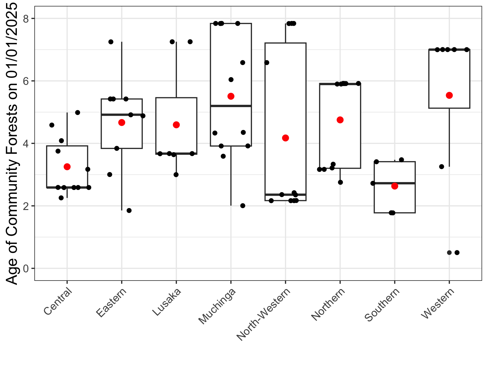
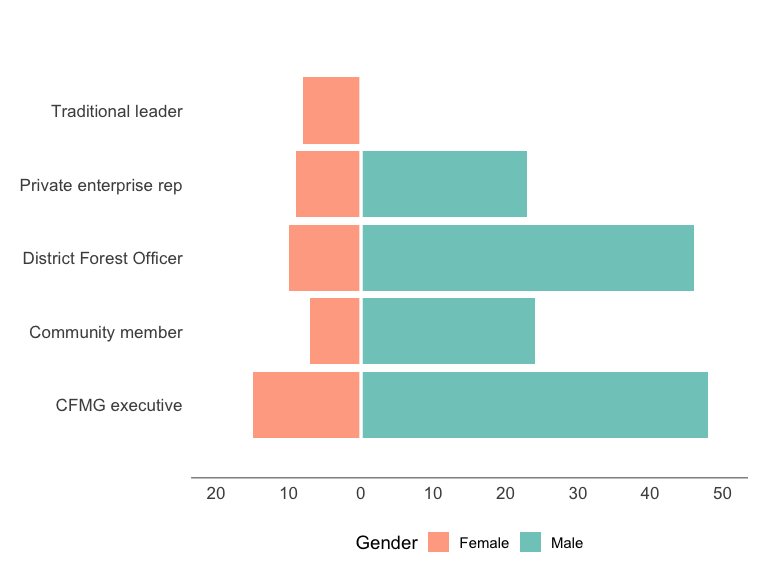

We surveyed 75 community forests across eight provinces and conducted 549 interviews in total. The sample included CFs from ~20 ha to >80,000 ha and that varied in years since establishment from one to 7 yrs. In each community forest, we conducted four Focal Group Discussions with (i) CFMG Executive, (ii) Community men, (iii) Community women, and (iv) Community youths. This enables us to examine differences in perspectives towards community forest management across these stakeholder groups. In addition, we surveyed individual key stakeholders, including District Forest Officers, CFMG Executive members (usually the Secretary), NGO or private sector partners, and traditional leaders. Overall, the sample was male biased, reflecting gender biases in roles at the community level, but our information is balanced through specifically including a female Focal Group Discussion in each community. The sample included a wide range of ages from ~20 to >80 years. Although most interviewees had lived all their lives in the community, the sample include some who had moved into the community recently. Our sampling approach ensured an unbiased selection and these data demonstrate that we have covered a wide range of CFs, in terms of geography, size and age, and interviewees, in terms of gender, age and roles. Hence, our results should be generalisable at the national level.
Community Forests surveyed
The sampling protocol targeted 80 community forests (CF) across eight provinces. Initially we attempted to sample ten CFs per province. However, as some provinces had very few CFs, this was not possible. Hence, to make up the numbers, we selected up to 12 CFs from provinces with more.
Occasionally, we were unable to survey a CF when Community Forest Management Group (CFMG) members or community members were not available. The final sample, therefore, included 75 CFs. The list of surveyed CFs is given in Appendix 2.
Number of Community Forests surveyed
The numbers per province are given in Figure 1. As can be seen, Southern province have the fewest, where we were only able to survey five CFs, and Muchinga had the most with 13 surveyed CFs.
Figure 1: Number of community forests surveyed by province.
Size of community forests surveyed
The CFs surveyed range widely in size from less than 100 ha to over 100,000 ha (Figure 2). Within provinces, we surveyed a wide range of CF sizes, but the median sizes varied from around 900 ha in Muchinga Province to approximately 80,000 ha in Lusaka Province.
Figure 2: Size of community forests surveyed by province. The black dots represent the individual CFs. The boxes represent the 25th to 75th percentiles, with the black bar denoting the 50th percentile. The red dot indicates the mean size.
Through the survey tool, we asked respondents the size of their community forest (CF). Using only responses from the CFMG Executive groups, their answers are plotted against the size given in the Forestry Department database (Figure 3). We restricted answers to the CFMG executive group, as we expected them to be the best informed as the the official size of their CF.
Figure 3: Size of CF as reported by the CFMG executive against the size recorded in the Forest Department database
While most answers lie along the line, indicating perfect agreement between the Forestry Department database and the responses, several are off - some by very large amounts (note that the axes are log-scale). In some cases, these differences may reflect errors in the Forestry Department database. However, the other possibility is that the communities are misinformed as to the size of their CF, which in turn suggests FPIC may not have been properly conducted.
Age of community forests
The regulations enabling the formation of community forests were approved in 2018. Hence, the oldest CFs are approximately 8 yrs. However, most are less than 3 yrs old. We randomly selected CFs from among those that were at least 1 yr old in Jan 2024 (Figure 4). However, the data on Establishment Date in the Forestry Department database has some errors, so some CFs appear younger.
Code
cfmg |>group_by(province,Name) |>summarise(Mean_date =mean(`Date Established`),.groups ="drop" ) |>mutate(Age =interval(Mean_date,ymd("2025-01-01")) /dyears(1), ) |>ggplot(aes(x = province, y = Age)) +geom_boxplot() +geom_jitter()+scale_y_continuous(limits =c(0,8)) +stat_summary(fun=mean, geom="point", size=3, col ='red') +theme_bw(base_size =14) +theme(legend.position ="none",axis.text.x =element_text(size =rel(1.14), angle =45,hjust =1, vjust =1),axis.text.y =element_text(size =rel(1.14)),axis.title =element_text(size =rel(1.29)), ) +xlab("") +ylab("Age of Community Forests on 01/01/2025")

Figure 4: Age of community forests surveyed by province. The black dots indicate the individual CFs. The boxes represent the 25th and 75th percentile and the 50th percentile is indicated with the black bar. The red dot indicates the mean.
Interviews
Number of interviews
A total of 549 interviews across 75 Community Forest Management Groups (CFMGs) were surveyed across the eight provinces. The number of interviews per CFMG varied from five to 14 (Figure 5).
Figure 5: Number of interviews per CF. Mean (main bar) and standard deviation (whisker) of the number of interviews held per CFMG by province
In every CFMG, we aimed to hold four Focal Group Discussions (FDGs) including, (i) CFMG Executive, (ii) Community members - male, (iii) Community members - female, and (iv) Community members - youth. Below (Table 1) are the total numbers of the different categories of FDG we were able to conduct. As can be seen, we were unable to arrange FGDs for community males and youths in some CFMGs. Meanwhile, we have an extra FGD for female community members, because in one CF two groups were surveyed.
Code
cfmg |>filter(interview_type !="individual_interview") |>droplevels() |>group_by(interview_type) |>summarise(n =n() ) |>mutate(interview_type =case_when( interview_type =="cfmg_executive"~"CFMG Executive", interview_type =="cfmg_female"~"Community - Female", interview_type =="cfmg_male"~"Community - Male", interview_type =="cfmg_youth"~"Community - Youth",TRUE~ interview_type ) ) |>gt(rowname_col ="interview_type") |>tab_stubhead(label ="FDG type") |>tab_header(title ="FGD groups by type",subtitle ="n = number of FGD groups of each type.") |>opt_align_table_header(align ="left") |>cols_align(align ="center", columns =everything()) |>tab_style(style =cell_text(align ="left"),locations =cells_stub() ) |>tab_style(style =cell_text(align ="center"),locations =cells_stubhead() ) |>sub_missing()
Table 1: Number of Focal Group Discussions by type
FGD groups by type
n = number of FGD groups of each type.
FDG type
n
CFMG Executive
75
Community - Female
76
Community - Male
72
Community - Youth
69
The number of individual interviews with key stakeholders also varied among the CFs. However, we attempted to hold interviews with a CFMG Executive member (usually the secretary), the District Forest Officer and the community headmen or headwoman in every CF (Table 2).
Table 2: Number of Individual Interviews by interviewee role
Individual interviews by interviewee role
n = number of individual interviews by interviewee role.
Interviewee Role
n
Community member
31
CFMG Executive
63
Traditional leader
75
District Forest Officer
56
NGO representative
32
Gender breakdown of interviewees
Reflecting gender biases among the stakeholder groups, there was a much higher representation of men than of women among the key stakeholders interviewed (Table 3, Figure 6).
Code
cfmg |>filter(interview_type !="individual_interview") |>group_by(interview_type) |>summarise(senior_male =mean(senior_male),senior_female =mean(senior_female),youth_male =mean(youth_male),youth_female =mean(youth_female) ) |>mutate(interview_type =case_when( interview_type =="cfmg_executive"~"CFMG Executive", interview_type =="cfmg_female"~"Community - Female", interview_type =="cfmg_male"~"Community - Male", interview_type =="cfmg_youth"~"Community - Youth",TRUE~ interview_type ) ) |>gt(rowname_col ="interview_type" ) |>tab_stubhead(label ="FDG Type") |>cols_label(senior_male ="Senior Male",senior_female ="Senior Female",youth_male ="Youth Male",youth_female ="Youth Female" ) |>fmt_number(columns =c(senior_male, senior_female, youth_male, youth_female), decimals =1) |>tab_header(title ="Gender breakdown among FGD participants",subtitle ="Values represent the mean number of participants of each gender/age group per FGD type") |>opt_align_table_header(align ="left") |>cols_align(align ="center", columns =everything()) |>tab_style(style =cell_text(align ="left"),locations =cells_stub() ) |>tab_style(style =cell_text(align ="center"),locations =cells_stubhead() ) |>sub_missing()
Table 3: Gender and youth breakdown of FGDs. Mean number of participants in each category.
Gender breakdown among FGD participants
Values represent the mean number of participants of each gender/age group per FGD type
FDG Type
Senior Male
Senior Female
Youth Male
Youth Female
CFMG Executive
3.5
1.7
1.0
0.0
Community - Female
0.0
5.9
0.0
0.0
Community - Male
6.6
0.0
0.0
0.0
Community - Youth
0.0
0.0
4.5
3.4
Code
cfmg |>filter(interview_type =="individual_interview") |>group_by(interviewee_role,demo_information_interviewee_gender) |>summarise(Obs =n() ) |>rename(Gender = demo_information_interviewee_gender ) |>mutate(Gender =tolower(Gender),Obs_plot =if_else(Gender =="female", -Obs, Obs),interviewee_role =case_when( interviewee_role =="trad_leader"~"Traditional leader", interviewee_role =="NGO_rep"~"NGO representative", interviewee_role =="dfo"~"District Forest Officer", interviewee_role =="cfmg_member"~"Community member", interviewee_role =="cfmg_exec_member"~"CFMG executive", ) ) |>ggplot(aes(x = interviewee_role, y = Obs_plot, fill = Gender)) +geom_col(position ="identity") +coord_flip() +scale_y_continuous(breaks =seq(-20, 50, by =10), labels = abs,limits =c(-20,50) ) +scale_fill_manual(values =c("female"="#FFAB91", "male"="#80CBC4"),labels =c("Female", "Male") ) +geom_hline(yintercept =0, colour ="white", linewidth =1.2) +geom_vline(xintercept =0, color ="grey30", linewidth =0.7) +labs(x =NULL,y =NULL) +theme_minimal(base_size =14) +theme(legend.position ="bottom",legend.key.justification ="centre",# Remove all vertical grid lines except the zero line (already kept via geom_vline)panel.grid.major.x =element_blank(),panel.grid.minor.x =element_blank(),panel.grid.major.y =element_blank(),panel.grid.minor.y =element_blank(),axis.text.y =element_text(size =rel(1.14), vjust =0.5),axis.text.x =element_text(size =rel(1.14)),plot.margin =margin(t =50, r =15, b =10, l =15) )

Figure 6: Gender breakdown of individual interviews.
Age breakdown of intrerviewees
The ages of interviewees were broadly similar among men and women (Figure 7). While the median age of individual interviewees was slightly lower among men, the mean age was slight higher. This arises because the male sample included some much older men.
Figure 7: The age of individual interviewees by gender. The black dots represent individual interviewees. The box encompasses the 25th to 75th percentile with the 50th percentile denoted by the black bar. The red dot represents the mean.
Years interviewees have lived in their communities
When we examine the number of years living in the community (Figure 8), we find that the men interviewed had on average lived in the community longer than the women interviewed. In addition, the results reveal that some people interviewed had moved into the community in recent years.
Figure 8: The number of years individual interviewees claimed to have lived in the community by gender. The black dots represent individual interviewees. The box encompasses the 25th to 75th percentile with the 50th percentile denoted by the black bar. The red dot represents the mean.
Looking at the same information by interviewee role (Figure 9), we see that both the CFMG executive member interviewed and the community members interviewed included a wide range of participants from those who had recently moved into the community to those that had lived there for 50 yrs or more.
Figure 9: The number of years individual interviewees claimed to have lived in the community by interviewee role. The black dots represent individual interviewees. The box encompasses the 25th to 75th percentile with the 50th percentile denoted by the black bar. The red dot represents the mean.
Duration of involvement with CFMG
We asked the interviewees how many years they had been involved in the CFMG (Figure 10). The answers ranged from zero to ten years with the median among provinces ranging from around 3 yrs to 4.5 yrs. As the regulations for community forest management were only approved in 2018, claims of over 7 yrs seem unlikely but they may have been involved in a Community Resource Board (CRM) or Joint Forest Management, which preceded CFM in some areas. As most CFMGs have only held one election as part of their establishment process, we can expect that most people have been involved since the formation of their CFMG.
Figure 10: Number of years interviewees claimed to be involved in the CFMG by province. The black dots represent individual interviewees. The box encompasses the 25th to 75th percentile with the 50th percentile denoted by the black bar. The red dot represents the mean.